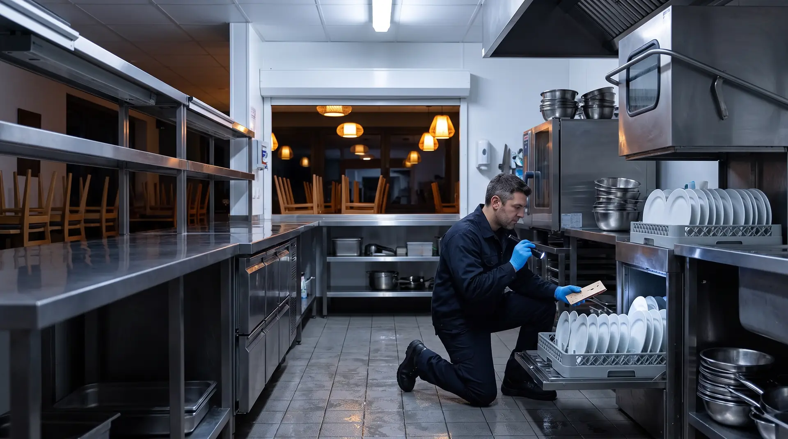
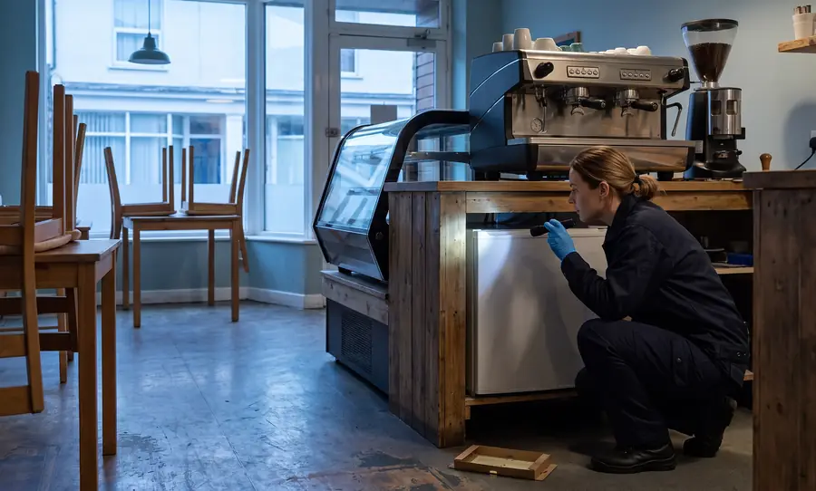
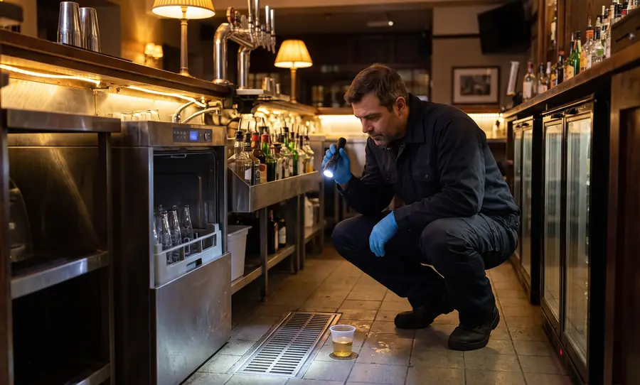
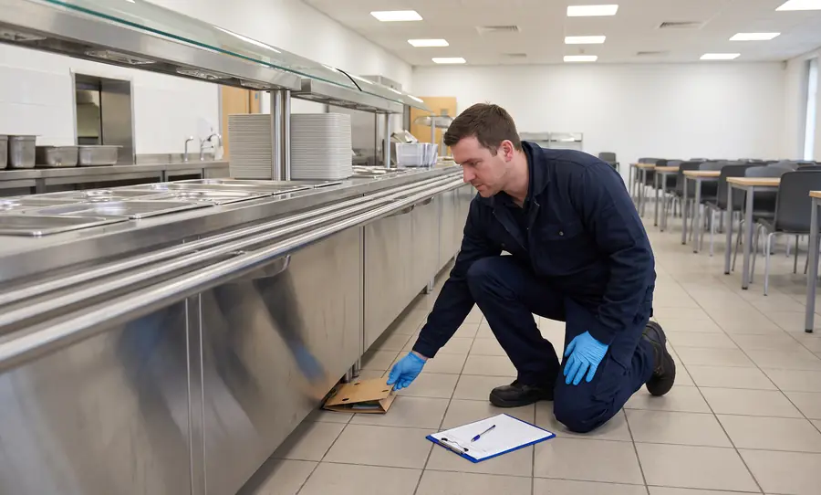
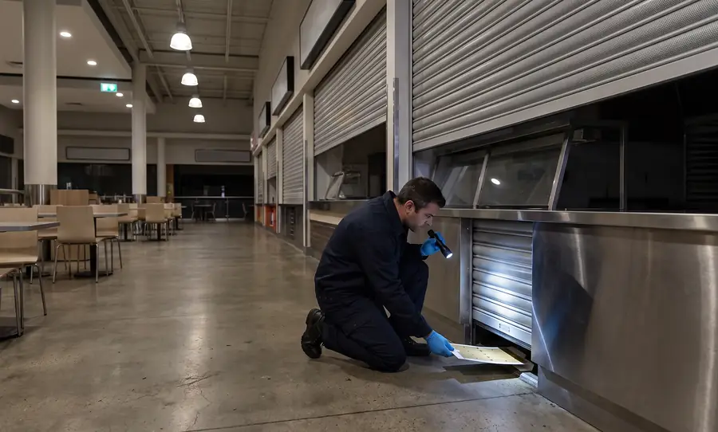
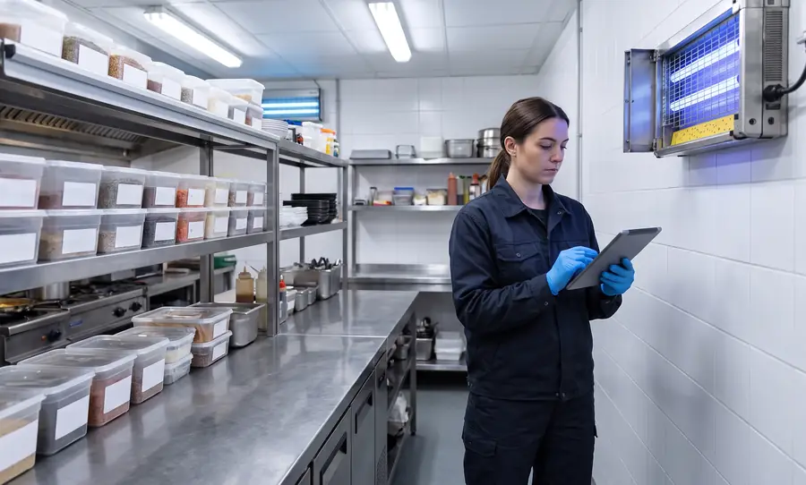

С 1 сентября 2026
Для общепита действует новый СанПиН 2.3/2.4.4282-26. В помещениях не должно быть насекомых и грызунов (п. 26), производственный контроль строится на принципах ХАССП (п. 4).

Дезинсекция и дератизация ресторана по договору. Приезжаем после закрытия, на кухне работаем гелевыми приманками и ловушками, распыляем только по найденному очагу. Журнал и акты ведём по СанПиН 2.3/2.4.4282-26 и СанПиН 3.3686-21 — их можно показать Роспотребнадзору и аудитору сети.
Срочные выезды: 24/7 · ночью и в выходные — без наценки
Пест-контроль ресторана — регулярная защита кухни, склада, бара и зала от тараканов, грызунов и мух по договору. Специалист приезжает по графику, проверяет пронумерованные точки контроля, записывает находки в журнал и подсказывает, как закрыть пути проникновения. Обработку проводят там, где мониторинг нашёл очаг, а не по всей площади.
С 1 сентября 2026
Для общепита действует новый СанПиН 2.3/2.4.4282-26. В помещениях не должно быть насекомых и грызунов (п. 26), производственный контроль строится на принципах ХАССП (п. 4).
2 раза в месяц
Общественное питание — объект особого эпидемиологического значения (п. 98 СанПиН 3.3686-21). Обследования на насекомых — не реже 2 раз в месяц (п. 101).
Каждый месяц
Дератизацию на таких объектах проводят по результатам ежемесячной оценки заселённости грызунами (п. 110 СанПиН 3.3686-21).
До 90 суток
За нарушение санитарных требований к питанию населения организации грозит штраф 30–50 тыс. ₽ или приостановление деятельности до 90 суток (ст. 6.6 КоАП РФ).
СанПиН 2.3/2.4.4282-26 заменил прежний СанПиН 2.3/2.4.3590-20. По ТР ТС 021/2011 (ст. 10) периодичность дезинсекции и дератизации входит в процедуры ХАССП — её закрепляет программа пест-контроля.
0 из 5
Чего-то не хватает — на бесплатном обследовании покажем, что добавить до проверки.
Заказать бесплатное обследованиеВыберите зону на схеме или в списке — покажем, кто там заводится и какие точки контроля мы ставим.
Гости не видят специалиста, утром кухня работает как обычно. Выберите сценарий:

Главный вредитель общепита. Прячутся в тёплых щелях: за плитами, в посудомоечных машинах, кофемашинах и кабель-каналах. Гели и мониторы.

Заходят с поставками и из подвала, живут в подвесных потолках и за панелями. В помещениях — ловушки без яда.

Контейнерная площадка, подвал, канализация. Станции с приманкой снаружи, ходы и щели — в замечаниях к акту.

Мухи — у входа, на веранде и у отходов, дрозофилы — в баре и трапах. Световые и приманочные ловушки, поиск мест выплода.

Фараоновы муравьи в домах с центральным отоплением: сладкое, тёплые полости в стенах. Приманки по муравьиным дорожкам.

Мука, крупы, специи и орехи на складе. Феромонные ловушки и проверка входящих партий.

Полная кухня, склад и зал: схема точек на все зоны, визиты после закрытия.

Маленькая кухня и витрина: тараканы в кофемашинах и холодильниках, дрозофилы у фруктов. Визит до открытия.

Пивные линии, сиропы и фрукты: дрозофилы и бабочницы в трапах. Работаем днём, до открытия.

Большие объёмы и линии раздачи: визиты в санитарный день, документы для проверок.

Вредители приходят от соседей и из общих коммуникаций: график и обработки согласуем с управляющей компанией центра.

Один договор на все адреса, общий график визитов и сводный отчёт по сети для управляющей компании.
| Документ | Что в нём | Кто спросит |
|---|---|---|
| Договор и лицензия исполнителя | Кратность визитов, вредители, зоны, срок внепланового выезда | Роспотребнадзор |
| Программа пест-контроля | Целевые вредители, зоны, средства и пороги — часть производственного контроля по ХАССП | Роспотребнадзор, аудитор сети |
| Схема точек контроля | План кухни, склада и бара с номерами ловушек и мониторов | Все проверяющие |
| Журнал пест-контроля | Результаты осмотра по каждой точке и принятые меры | Роспотребнадзор, аудитор |
| Акт после визита | Что сделано, где найдены вредители, замечания персоналу | Управляющий, бухгалтерия |
| СГР и инструкции на средства | Какие средства применяли, где и с какими ограничениями | Роспотребнадзор, шеф-повар |
| Отчёт по сети за месяц | Сравнение адресов, повторные находки, выполнение замечаний | Управляющая компания, франчайзер |
Образцы — в материалах: журнал пест-контроля и программа пест-контроля. Условия обслуживания — на странице «Договор на дератизацию и дезинсекцию».
Что спросит инспектор о вредителях: вопросы 11, 58, 108 и 109 проверочного листа для общепита (приказ Роспотребнадзора № 580, приложение 2). Формулировки вопросов и документы для ответа — в разборе проверочных листов 2026.
Срочный выезд, поиск очага в мойке, баре и под техникой, обработка ночью, контроль через 10–14 дней и памятка персоналу.
Обследование, договор, схема точек и первый визит — к проверке будут журнал и акты.
Ищем места выплода: трапы, пивные линии, переспевшие фрукты. Ловушки, санитарные рекомендации, контроль по журналу.
Обследуем помещение до открытия, расставляем точки контроля — документы готовы к первому дню работы.
Типовые ситуации, а не описания конкретных клиентов.
от 3 500 ₽ в месяц
Плановые визиты по программе, точки контроля и расходники, журнал и акты. Внеплановый выезд по договору — в течение 3 часов.
от 3 500 ₽ за выезд
Истребительная дезинсекция при очаге: ночью, с контрольным осмотром через 10–14 дней.
Расчёт после обследования
Единый договор на все адреса, общий график визитов и сводный ежемесячный отчёт.
Цена зависит от:
Обследование и расчёт — 0 ₽. Ночные визиты и выходные — без наценки. При переходе на годовой договор стоимость первой истребительной обработки учитывается в расчёте.
Рассчитать для моего заведенияПредприятия общественного питания по СанПиН 3.3686-21 — объекты особого эпидемиологического значения. Обследования на насекомых — не реже 2 раз в месяц (п. 101), по грызунам — ежемесячная оценка (п. 110). Истребительную обработку проводят, когда мониторинг нашёл вредителей.
Да. Осмотры, мониторы и гелевые приманки не требуют закрытия. Если нужна обработка очага, её проводят после закрытия или до открытия; время возобновления работы — по инструкции к средству, согласуем заранее.
В зонах с открытым продуктом — без распыления: гели в щели и клеевые мониторы в недоступных местах. Продукты и посуду перед обработкой убирают по нашему списку. Все средства — с СГР и инструкцией.
Вместо СанПиН 2.3/2.4.3590-20 действует СанПиН 2.3/2.4.4282-26 (постановление Главного государственного санитарного врача РФ от 02.06.2026 № 18). В помещениях не должно быть насекомых и грызунов (п. 26), производственный контроль — на принципах ХАССП (п. 4). Кратность дезинсекции и дератизации по-прежнему задаёт СанПиН 3.3686-21.
Договор с организацией, у которой есть лицензия, программа пест-контроля, схема точек, журнал и акты после каждого визита, СГР и инструкции на применённые средства.
Договор — от 3 500 ₽ в месяц, разовая обработка — от 3 500 ₽ за выезд. Точную сумму называем после бесплатного обследования; ночные и выходные визиты — без наценки.
Срочные выезды — 24/7. Для заведений на договоре внеплановый выезд — в течение 3 часов.
Да. Один договор на все адреса, единый график, журнал на каждой точке и сводный ежемесячный отчёт по сети.
Да. С 1 марта 2025 года услуги дезинфекции, дезинсекции и дератизации лицензируются. У ООО «Центр дезинфекционных услуг» действующая лицензия № Л064-00111-77/01942445 — запись можно проверить в реестре лицензий Роспотребнадзора.
Принимаем текущую схему точек и журнал, проводим обследование и продолжаем записи без разрыва в документах.
Специалист в удобное вам время осмотрит кухню, склад, бар и зал, найдёт места, где прячутся вредители, и проверит папку документов. После выезда — расчёт и проект договора.